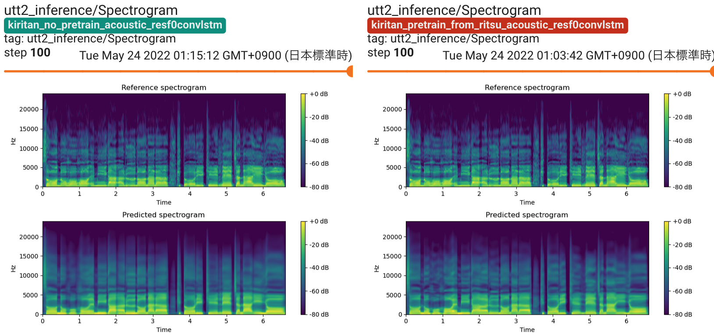
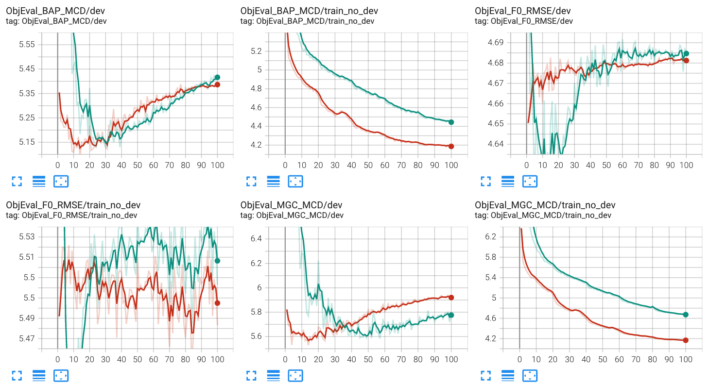
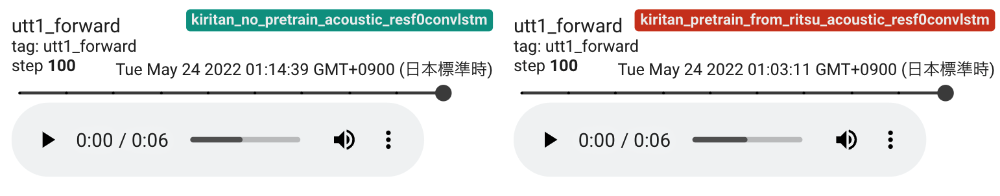

Tips
This page summarizes tips for NNSVS.
Database creation for NNSVS/ENUNU
A detailed tutorial for for making voice banks can be found at NNSVS Database Making Tutorial (by PixProcuer). It is worth checking Q&A section if you encounter any problems.
How to avoid GPU OOM
Here are some things to try when you see GPU out-of-memory (OOM) errors:
Reduce batch size. Most recipes use batch size of 8 by default, but it is okay to set it to 2 for example.
If you still see GPU OOM even if you set small batch size, try to reduce the model size by changing number of layers, number of hidden units, etc.
(Only if you have supported NVIDIA GPUs) Enable mixed precision training. You can save GPU RAM while accelerating training.
Set
max_time_framesin your data config. This option forces the sequence length of every mini-batch tomax_time_frames.
How much VRAM is required?
10GB or larger is recommended in general. Note that the amount of required VRAM depends on what models you want to train.
Monitoring traing progress via Tensorboard
New feature in NNSVS v0.0.3
Please consdier using Tensorboard for monitoring training progress. You can run Tensorboard by:
tensorboard --logdir=/path/to/tensorboard/logs
If you use the latest version of train_resf0.py, you can see spectrogram, F0, aperiodicity visualization. Limited support is available for train.py.
 You can check audio outputs on Tensorboard.
Building SVS systems with small amount of data
Try fine-tuning from a pre-trained model. Note that the model architecture must be the same between the pre-trained model and the model you are going to train.
For example, the publicly available version of nit-song070 database only contains 30 songs, and it is difficult to train quality models with it. In this case, you can consider using fine-tuning from models trained on kiritan_singing database.
Any of time-lag/duration/acoustic models can benefit from pre-training/fine-tuning. However, pre-training/fine-tuning is most important for acoustic models.
Debugging NNSVS
If you want to debug NNSVS’s core library, it is recommended to use debugging tools such as ipdb or pdb. I prefer to use ipdb for general purpose debugging of Python code.
Other tips
The number of epochs: 50 would be enough for most cases. For training acoustic models, 100 may work better. For MDN-based acoustic models, you would try 200 or more.
Don’t over-trust dev loss. It is well known that loss is not closely correlated to subjective quality.
No problem with negative loss for MDN models.
Use smaller
pitch_reg_weightif your audio and note pitch is property aligned (or pitch-corrected).pitch_reg_weight=0.0works fine with Ritsu’s database (V2).